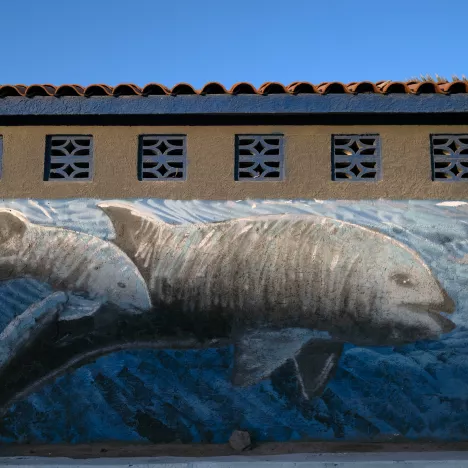
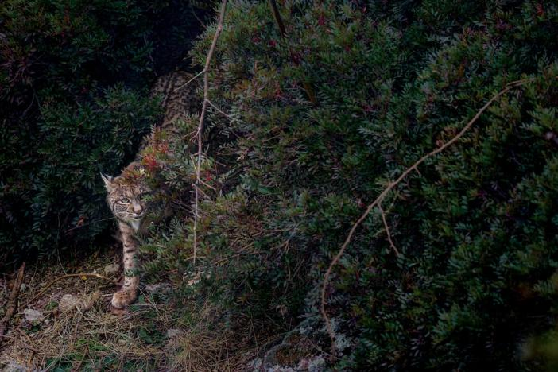

Science
New method delivers life-saving drugs to the brain-using sound
Read
History Magazine
The victorious origins of Cinco de Mayo
Read
Science
Fruits and vegetables are less nutritious than they used to be
Read
Today's picks



ANIMALS
Vaquita porpoises may still recover if illegal fishing ends
MAGAZINE
4 eco-frendly ways to keep pest out of your yard

MAGAZINE
How this feline became the biggest comeback in cat conservation
HISTORY MAGAZINE
Thhis American's Supreme Court fight defined U.S. citizenship
TRAVEL
To see Saudi Arabia, start with this 'magical' gateway to Mecca
ENVIRONMENT
Forests as 'carbon offsets'? Climate change has other plans.